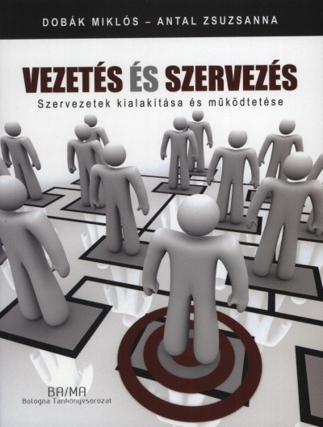

Vezetés-szervezés
A tárgy oktatója: Veresné dr. Somosi Mariann Éva
Tantárgy tematika:
1. Bevezetés. A kontingenciaelmélet
2. Vezetési tevékenység és vezetési funkciók.
3. Célkitűzés és stratégiaalkotás.
4. Szervezeti strukturális jellemzők.
5. Szervezeti modellek: egyszerű szervezet, funkcionális szervezet.
6. Divizionális szervezet, mátrix szervezet.
7. Szervezettervezés, folyamatszervezés.
9. Motiváció.
10. Vezetési stílus és vezetési szerepek.
11. Oktatási szünet
12. Kommunikáció.
13. Csoportok létrehozása és vezetése.
14. Kontroll.